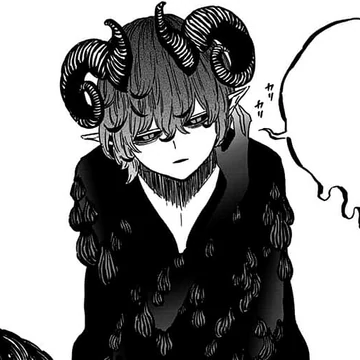

Tejan Maharjan

Summary
In the 3 months time of my SEE vacation , I really wanted to utilize it properly so I went on to learn new skills.
So, I found web development as an interesting and useful skill to learn .
Eduacation
- Completed Up to Grade 10(2025 A.D.)
Work Experience
Sadly, Up until now, I haven't had any sort of work experience due to the restricting age of labour.
Rosebud School
(2011 - 2025) april 1
- Photocopy machine
- Volunteer works
- Presentation and various Orientations
Skills
- Basics of Blender(not fully):⭐️⭐️
- Cooking(only the foods that I like): ⭐️⭐️⭐️⭐️
Awards, certifications, or other achievements
- School Awards:
- Best player award
- Participation certificates
- Volunteer certificates
Other Informations: